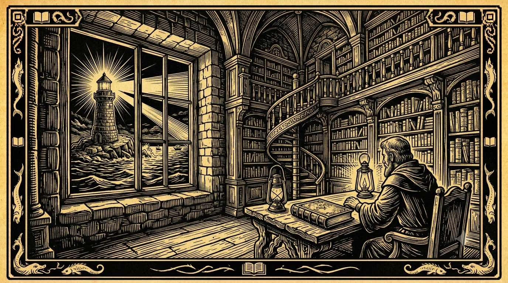

Canto IX: O Epílogo Clássico
Disseram que a pressa era a lei da nossa era,
Que a novidade do dia é tudo o que se espera.
Mas quem constrói na rocha do clássico consagrado,
Não vê seu castelo de cartas pelo vento derrubado!
HTML, Java e SQL têm mais de vinte anos de estrada,
E fazem a engrenagem rodar com a força comprovada.
O Desafio da Divina Peleja
Ao chegarmos ao final desta jornada poético-arquitetural, olhamos para trás e relemos os tormentos e as redenções do Caixa Soberano. O que começou como uma sátira contra o inchaço e a fragilidade do desenvolvimento moderno consolidou-se como um manifesto pragmático de engenharia de software na borda física.
Enfrentamos a ilusão da centralização absoluta na nuvem, denunciamos o desperdício do k3s e do Chromium na boca de caixa, e mostramos como a complexidade do ecossistema de empacotadores JavaScript degradava as operações de vendas das lojas físicas no Brasil. O desafio proposto nunca foi contra a inovação em si, mas contra a complexidade acidental que o hype corporativo força sobre os computadores limitados dos varejistas.
O Manifesto do Clássico Sem Modismo
A grande verdade da engenharia de software distribuída é que as soluções mais resilientes são construídas sobre pilhas simples, estáveis e amplamente compreendidas pela indústria há mais de uma década. No CaraCore PDV, a Borda Soberana apoia-se em quatro pilares clássicos:
- Persistência Local (SQLite): Criado há mais de 25 anos, o SQLite prova que um banco relacional in-process leve de arquivo único, quando tunado no modo WAL, é imbatível para durabilidade transacional local.
- Renderização Server-Side (HTML-First): Gerar fragmentos de HTML no servidor local da loja e entregá-los diretamente ao navegador via HTMX elimina frameworks SPA pesados e traz atualizações de tela instantâneas sem NPM/Webpack.
- Rigor Operacional (Java / Spring MVC): O ecossistema Java acumula trinta anos de maturidade. A concorrência e vazão de periféricos é resolvida pelo Spring MVC clássico com as Threads Virtuais (Loom), mantendo o código síncrono limpo e altamente legível.
- Transmissão Robusta (Outbox FIFO): A consistência eventual e a entrega assíncrona tolerante a falhas de rede utilizam tabelas de banco e retentativas sequenciais simples, mantendo os dados contábeis íntegros de forma transparente.
A Maturidade de Olhar para Trás
Em uma indústria de tecnologia que incentiva a adoção constante de novidades efêmeras, ter a coragem de projetar sistemas com tecnologias clássicas é um sinal de extrema maturidade arquitetural. As ferramentas que suportam nossas transações não precisam ser as mais recentes; elas precisam ser as mais robustas. A rocha do clássico é o farol que mantém a frota operacional em segurança quando as tempestades de rede atingem o balcão.
⚖️ O Veredito da Bancada (Técnico vs. Negócios)
💻 Para Técnicos (A Baseline)
Evite o inchaço de dependências. Desenvolva APIs locais baseadas no paradigma Spring MVC síncrono sob JVMs modernas. Confie no SQLite local com journal_mode=WAL para ACID local a 1ms e transmita os dados por filas Outbox sequenciais e idempotentes via UUID para resiliência na internet.
👔 Para Negócios (O Retorno)
Sistemas fáceis de manter, livres de bugs crônicos de rede e fáceis de treinar equipes. A adoção de stacks maduras há mais de dez anos reduz os custos de suporte operacional no varejo e protege a integridade do seu faturamento a longo prazo.
O Legado da Estabilidade
A simplicidade técnica não limita a inovação — ela a liberta da fragilidade. O PDV soberano prova que usar stacks clássicas, limpas e autocontidas é a forma definitiva de construir software que dura décadas e protege o faturamento das lojas de forma ininterrupta.
Hashtags
Contato
- E-mail: suporte@caracore.com.br
- Site: www.caracore.com.br
- LinkedIn: Cara Core Informática
Desenhe sua arquitetura com base no modelo de Borda Soberana da Cara Core e reduza os custos operacionais com software.
Falar com Especialistas